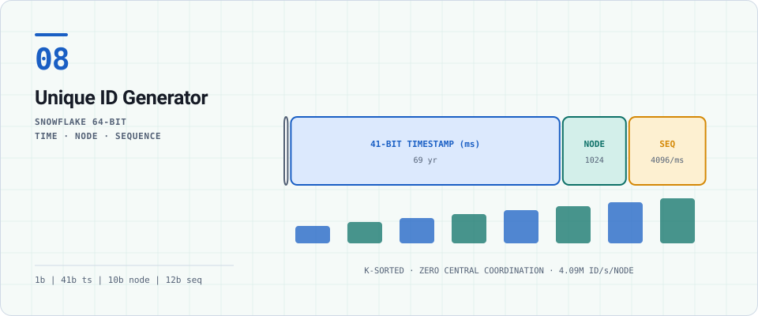
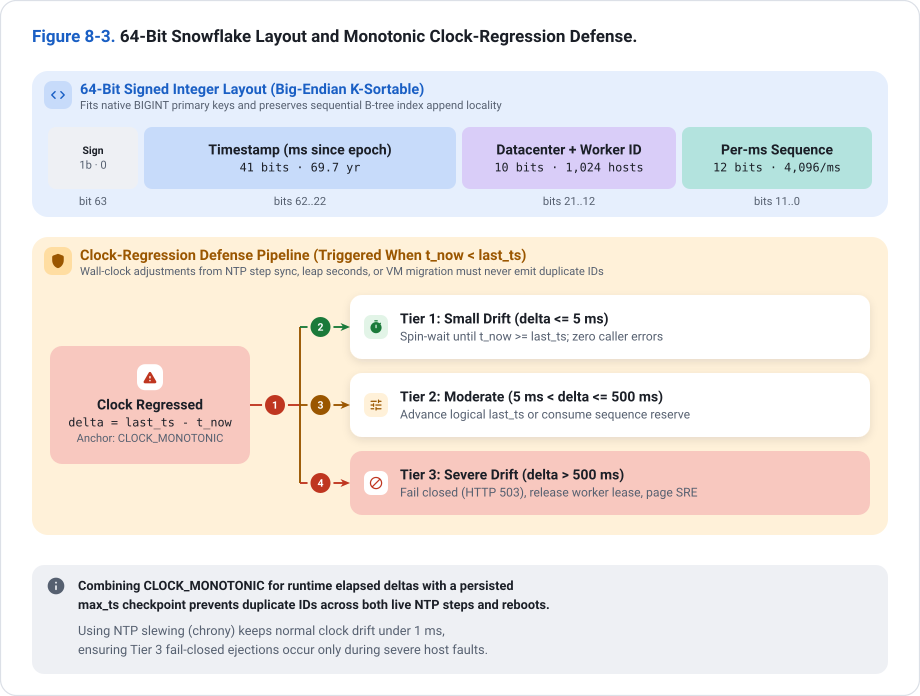

Chapter 8: Unique ID Generator

Nearly every record in a distributed storage system requires an unambiguous primary key so that orders, invoices, ledger entries, and foreign-key indexes reference exactly one entity across the lifetime of the platform. On a single relational database, a monotonic BIGSERIAL or AUTO_INCREMENT sequence satisfies uniqueness, compactness, and chronological sort order in one atomic page increment. Once we shard writes across dozens of database nodes and multiple availability zones, routing every record creation through one central sequence reintroduces both a throughput bottleneck and a single point of failure.
In this chapter, I design a distributed 64-bit unique identifier generator that produces roughly time-ordered keys without cross-node coordination on the request path. We begin by establishing requirements, actors, and capacity bounds, then specify wire contracts and separate Raft-backed worker-ID leasing (control plane) from lock-free local generation (data plane). In the deep dives, we derive the 64-bit Snowflake bit budget, compare it against ticket servers, range-block allocators, and UUIDv7, and harden the generator against NTP backward clock steps, leap seconds, and crash-restart reuse using monotonic guards, disk epoch checkpoints, and Hybrid Logical Clocks (HLC).
In this chapter, we cover
- actors, functional contracts, sub-millisecond latency SLOs, non-goals, and arithmetic capacity bounds
- HTTP/gRPC single and batched allocation contracts, 64-bit integer string encoding for JSON safety, and lease schemas
- separation of consensus-backed worker-ID leasing (control plane) from shared-nothing local generation (data plane)
- comparative analysis of database counters, multi-master ticket servers, range-block allocators, UUIDv4, UUIDv7, and 64-bit Snowflake layouts
- bit-level Snowflake allocation, per-millisecond sequence exhaustion, B-tree append locality, and range-sharded hotspot trade-offs
- defenses against NTP clock regressions, leap seconds, VM restarts, and worker-ID collisions via epoch checkpoints and Hybrid Logical Clocks
- operational failure modes, SLIs, production deployments (Twitter Snowflake, Instagram, Discord, Sonyflake), and simulation verification
8.1 Requirements, Actors, and Capacity Bounds
Actors and Use Cases
We organize the unique ID generator around three operational actors: application services requesting identifiers on the hot write path, generator nodes leasing exclusive worker slots during startup, and platform operators auditing clock skew and sequence saturation (Figure 8-1).

| Actor | Operation | Concrete Scenario |
|---|---|---|
| Application Service | Request single ID (POST /v1/ids:allocate) or batch (POST /v1/ids:batchAllocate) | Mint primary keys for newly created orders, chat messages, or telemetry events across sharded databases |
| Application Service | Decode embedded metadata | Extract creation timestamp and originating node bits during incident triage or time-range log correlation |
| Generator Node | Lease and renew a 10-bit worker_id (0 to 1023) | Acquire an exclusive worker slot from the etcd control plane at process startup and checkpoint its high-water timestamp |
| Platform Operator | Monitor clock drift, sequence exhaustion, and lease churn | Detect NTP stepping faults or approaching sequence saturation before client requests experience wait delays |
Functional Requirements
| No. | Functional Requirement |
|---|---|
| 0 | We guarantee global uniqueness across all active, retired, and restarted generator nodes for the entire operational lifetime of the system. |
| 1 | Every generated identifier fits inside a signed 64-bit integer (int64, non-negative 0 to 2^63 - 1) so it maps natively to relational BIGINT primary keys and compact B-tree indexes. |
| 2 | Identifiers are roughly time-ordered (k-sortable): an ID minted later sorts numerically greater than an ID minted earlier whenever their creation times differ by more than the maximum inter-node clock skew. |
| 3 | The service supports both single-ID allocation and batched block allocation (count up to 4,096 per call) over HTTP/2 and gRPC, as well as an embeddable in-process library mode. |
| 4 | Any node can decode the creation timestamp (millisecond precision), datacenter/worker identifier, and per-millisecond sequence number directly from an ID without external lookups. |
Non-Functional Requirements and SLOs
| No. | Property | Target Specification | Architectural Consequence |
|---|---|---|---|
| 0 | Latency | p50 <= 0.2 ms, p99 <= 1.0 ms over local-AZ RPC; < 1 microsecond embedded in-process | Prohibits cross-node consensus or database round trips on the generation path; generation uses strictly local memory and atomic instructions |
| 1 | Availability | 99.999% data-plane availability (<= 5.26 minutes/year downtime) | Shared-nothing fleet across three availability zones; an active generator continues minting IDs even if the control plane and all peer generators fail |
| 2 | Throughput and Scale | Sustained 1,000,000 IDs/s cluster-wide; peak 4,096,000 IDs/s per generator node across up to 1,024 nodes | Requires a 12-bit per-millisecond sequence counter (2^12 = 4,096 IDs/ms/node) and a 10-bit worker address space |
| 3 | Uniqueness Consistency | Absolute (zero duplicates under crashes, restarts, and NTP regressions) | Requires linearizable Raft-backed worker_id leasing at startup, monotonic clock guards in RAM, and durable high-water timestamp checkpoints |
| 4 | Ordering Consistency | Approximate across hosts (bounded by inter-node NTP skew, typically 2 to 20 ms); strict within one node | Callers requiring causal or total order across nodes must obtain sequence numbers from a consensus log rather than inferring causality from IDs |
Non-Goals and Scope Boundaries
To keep the generation path fast and verifiable, we exclude the following properties from this system:
- Strict gap-free sequentiality: Sequence numbers reset to
0on every millisecond tick, and idle milliseconds produce numeric gaps. Callers must never subtract two IDs to count records. - Cryptographic unpredictability: Time-prefixed IDs are enumerable and expose millisecond creation timestamps. Authentication tokens, password-reset links, and public unguessable slugs require a separate CSPRNG token generator (at least 128 random bits).
- Cross-node causal ordering: Physical clocks drift across hosts. We do not attempt to use ID comparisons as a substitute for vector clocks, Lamport timestamps, or database transaction commit order.
- Dynamic bit-field resizing after launch: Reassigning bit widths between timestamp, worker, and sequence fields after issuing production IDs risks overlapping numeric ranges.
Back-of-the-Envelope Capacity Bounds
We size the bit budget, throughput ceiling, network bandwidth, and control-plane state from first principles before writing a schema:
| Resource Dimension | Arithmetic Derivation | Provisioned Bound |
|---|---|---|
| Timestamp Horizon (41 bits) | 2^41 ms / (1,000 * 60 * 60 * 24 * 365.25) | 69.73 years from custom epoch (for example, 2025-01-01T00:00:00Z lasts until 2094) |
| Per-Node Peak Rate (12 bits) | 2^12 = 4,096 IDs/ms * 1,000 ms/s | 4,096,000 IDs/s per generator node |
| Cluster Maximum Rate (10 bits) | 2^10 = 1,024 nodes * 4,096,000 IDs/s | 4.19 billion IDs/s theoretical ceiling |
| Baseline Fleet Sizing | 1,000,000 IDs/s target at <= 25% per-node capacity load across 3 AZs | 12 generator nodes (4 per AZ, ~83,333 IDs/s/node; ~2% of 4.09M ceiling, leaving huge burst headroom) |
| RPC Network Bandwidth | 1,000,000 single calls/s * 128 B gRPC frame (or 10,000 batches of 100 IDs * 1 KB) | 128 MB/s (1.02 Gbps) single-call; 10 MB/s (80 Mbps) batched |
| Control-Plane Lease State | 1,024 worker lease records * 256 B (owner, TTL, max_ts checkpoint) | 256 KB total in a 3-node etcd quorum (trivial memory footprint) |
Even 12 lightweight generator instances sustain an order of magnitude above our 1,000,000 IDs/s baseline while leaving over 1,000 worker slots spare for rolling deployments, canary instances, and cooldown quarantine windows.
8.2 External API and Data Contracts
We expose a binary gRPC interface for internal microservices, an HTTP/2 REST API for language-agnostic clients, and an embeddable library interface for ultra-low-latency callers that register directly as leased workers.
External HTTP/2 and gRPC Contracts
Whenever an ID travels over JSON, we serialize the 64-bit integer as a decimal string. IEEE 754 double-precision floating-point numbers used by JavaScript engines and many JSON parsers represent integers exactly only up to 2^53 - 1 (9,007,199,254,740,991). Returning a raw 64-bit JSON number causes browsers to round distinct IDs to the same value, corrupting client-side state.
Single ID allocation (POST /v1/ids:allocate):
POST /v1/ids:allocate HTTP/2
Host: idgen.internal
Accept: application/json
HTTP/2 200 OK
Content-Type: application/json
X-Worker-Id: 7
{
"id": "8388636672",
"timestamp_ms": 2000,
"worker_id": 7,
"sequence": 0
}
Batched ID allocation (POST /v1/ids:batchAllocate):
Batching amortizes network round trips and allows callers to keep a small local buffer without maintaining their own etcd lease. An Idempotency-Key header prevents retries from double-charging accounting quotas, though minting a fresh unused ID is harmless for uniqueness.
POST /v1/ids:batchAllocate HTTP/2
Host: idgen.internal
Content-Type: application/json
Idempotency-Key: checkout-pod-19-batch-402
{
"count": 100
}
HTTP/2 201 Created
Content-Type: application/json
{
"ids": ["8388636672", "8388636673"],
"count": 100,
"worker_id": 7
}
When a generator node detects a severe backward clock jump exceeding its safe wait threshold (for example, > 15 ms), it rejects requests immediately with 503 Service Unavailable and Retry-After: 1 while removing itself from load-balancer health checks so local-AZ routers fail over to healthy peers.
Internal gRPC contract (Protocol Buffers):
syntax = "proto3";
package idgen.v1;
service IdGeneratorService {
rpc NextId(NextIdRequest) returns (NextIdResponse);
rpc NextBatch(NextBatchRequest) returns (NextBatchResponse);
}
message NextIdRequest {}
message NextIdResponse {
int64 id = 1; // Wire-encoded as varint/fixed64; zero precision loss in gRPC
}
message NextBatchRequest {
uint32 count = 1; // Bounded to [1, 4096]
}
message NextBatchResponse {
repeated int64 ids = 1;
}
Control-Plane Lease and Checkpoint Schema
In the etcd control plane, we maintain two key namespaces per worker slot w in [0, 1023]:
/idgen/workers/{worker_id}/lease -> { "host": "az-a-node-04", "lease_id": 918273, "started_at_ms": 1763612000000 } [TTL = 30s]
/idgen/workers/{worker_id}/checkpoint -> { "max_ts_ms": 1763612045000, "retired_at_ms": 0 } [Persistent]
The /lease key is attached to an etcd ephemeral lease (TTL = 30 s, renewed every 10 s). The /checkpoint key persists indefinitely so that no future host acquiring worker_id can ever mint an ID at a millisecond earlier than max_ts_ms.
8.3 High-Level Architecture: Control Plane vs. Data Plane
We decouple worker-ID assignment and high-water epoch persistence (control plane) from per-request identifier generation (data plane). Once a generator node holds a valid 10-bit worker ID, it performs zero network I/O to produce identifiers (Figure 8-2).

Component Responsibilities and Failure Domains
| Component | Plane | State Held | Failure Impact and Mitigation |
|---|---|---|---|
| Worker-ID Lease Coordinator (3-node etcd) | Control | Authoritative map of leased worker_id slots (0 to 1023) and durable max_ts_ms checkpoints | Tolerates 1 node failure transparently. If quorum is lost, running generators continue minting IDs uninterrupted; only new node startups pause until quorum returns |
| Epoch Checkpoint Store | Control | Highest timestamp horizon promised by each worker slot, updated asynchronously every 2 to 5 s | Prevents a restarted or reassigned worker from reusing timestamps after a backward NTP correction |
| Zone-Aware Edge Router (L7 Proxy) | Data | Stateless routing table with local-AZ affinity and active health probes | Keeps caller RTT below 0.5 ms by preferring same-AZ generators; automatically drains any node reporting clock regression (503) |
| Snowflake Generator Fleet (Multi-AZ) | Data | Leased 10-bit worker_id, atomic (last_ms, sequence) 64-bit state word, local disk checkpoint file | Shared-nothing across nodes. Losing one node reduces fleet capacity by 1/N with zero coordination overhead and zero lost uniqueness |
Hot Data Path Walkthrough
- Startup Lease Acquisition (Off Hot Path): When a generator starts, it runs a compare-and-swap transaction in etcd to claim an unleased
worker_idwhose quarantine cooldown (retired_at_ms + 60,000 ms) has elapsed. It readscheckpoint.max_ts_msand refuses to mark itself healthy until its local wall clock strictly exceedsmax_ts_ms. - Zone-Local Request Routing: An application service sends
NextIdorNextBatchover a persistent HTTP/2 gRPC channel to a same-AZ generator (or calls the in-process library directly). - Lock-Free Bit Packing: The generator reads its wall clock and monotonic clock delta, verifies the timestamp has not regressed below
last_ms, incrementssequence(wrapping and awaiting the next millisecond ifsequence == 4096), and packs the 64-bit integer in nanoseconds. - Periodic Horizon Checkpointing (Background): A background thread writes
now_ms + 5,000 msto local disk and etcd every2seconds. If the process crashes and restarts within5seconds on a drifted clock, startup recovery waits until the clock clears the persisted horizon.
8.4 Comparative Design Space and 64-Bit Snowflake Layout
Before committing to a composite time-worker-sequence layout, we evaluate the four classical families of distributed ID generation against our requirements.
Comparing the Four Classical Approaches
- Single Database Sequence (
AUTO_INCREMENT): Produces compact, gap-free 64-bit integers with exact global ordering. However, every write across the entire platform must serialize on one primary database instance, turning ID generation into a global availability bottleneck. - Multi-Master Ticket Servers (Flickr Pattern): Deploying
Ndatabases where serveristarts atiand steps byN(1, 3, 5...and2, 4, 6...) removes the single point of failure. Its operational weakness is rigidity: changingNonline requires coordinated step reconfiguration without range overlap, and cross-node time order disappears as traffic skews between masters. - Coordinator Range-Block Allocator (Segment Mode): A durable coordinator hands out blocks of
1,000to10,000contiguous integers to each worker, reducing coordinator RPCs by three to four orders of magnitude. Double-buffering (prefetching the next block at20%remaining) hides network stalls. However, worker crashes discard unused block tails, and IDs from slow workers lag far behind busy workers, destroying chronological ordering. - Random and Time-Prefixed 128-Bit UUIDs (UUIDv4 and UUIDv7):
- UUIDv4 uses
122random bits and requires zero coordination. By the birthday paradox, generating10^15IDs (1,000,000IDs/s for31.7years) yields a collision probability of roughlyn^2 / 2^123, or~1 in 10,000,000. Its practical costs are double storage overhead (16 bytesin every primary key, foreign key, and secondary index) and uniform random distribution across B-tree leaf pages. Once an index outgrows RAM, random primary-key inserts trigger a disk read and dirty-page eviction on nearly every write. - UUIDv7 (RFC 9562, 2024) places a 48-bit Unix millisecond timestamp in the most significant bits followed by
4version bits,12sub-millisecond/counter bits,2variant bits, and62random bits. UUIDv7 restores B-tree append locality while keeping zero startup coordination. Its sole drawback for our contract is size:128 bitscannot fit in a 64-bitBIGINTcolumn.
- UUIDv4 uses
| Dimension | Single DB Sequence | Ticket Servers (step = N) | Range Blocks (Segment) | UUIDv4 (128-bit) | UUIDv7 (128-bit) | 64-Bit Snowflake (Chosen) |
|---|---|---|---|---|---|---|
| Width | 64 bits | 64 bits | 64 bits | 128 bits | 128 bits | 64 bits |
| Hot-Path Network I/O | 1 RTT per ID | 1 RTT per ID | 1 RTT per block | None | None | None |
| Time Ordering | Exact | None | None | None | K-sorted (ms) | K-sorted (ms) |
| B-Tree Index Locality | Sequential append | Sequential per shard | Fragmented by worker | Random page thrashing | Sequential append | Sequential append |
| Control-Plane Outage | Total outage | Survives N - 1 loss | Continues until block empties | Unaffected | Unaffected | Running nodes unaffected |
| Primary Failure Hazard | SPOF bottleneck | Rigid cluster resizing | Gaps and cross-node skew | Cloned PRNG seed; index bloat | 16 B key footprint | Duplicate worker_id or clock rollback |
The design adopts the 64-bit Snowflake layout to fit within a single 64-bit integer key, preserve k-sortable B-tree locality, and eliminate hot-path network coordination.
64-Bit Field Layout and Uniqueness Proof
Figure 8-3 details the bit allocation across the 64-bit signed big-endian integer:
- Bit
63(1 bit, sign): Permanently0so the value stays non-negative across signed 64-bit integer types in Java, PostgreSQL (BIGINT), and Go (int64). - Bits
62..22(41 bits, timestamp): Milliseconds elapsed since a custom system epoch (epoch_ms). Placing the timestamp in the most significant bits ensures that ordinary integer comparison orders IDs chronologically. - Bits
21..12(10 bits, datacenter and worker ID): Uniquely identifies up to1,024concurrent generator instances (commonly split into3to5bits for datacenter/AZ and5to7bits for host slot so operators can identify the originating zone by bitmasking). - Bits
11..0(12 bits, per-millisecond sequence): Monotonically increments from0to4,095within each millisecond on a given node and resets to0on the next millisecond tick.
id = ((timestamp_ms - epoch_ms) << 22) | (worker_id << 12) | sequence

Uniqueness follows by case analysis on any two identifiers A and B:
- If
AandBare generated by different nodes, they differ in bits21..12, provided Invariant 1 holds: no two active generators share the sameworker_idwithin the same clock window. - If
AandBare generated by the same node in different milliseconds, they differ in bits62..22, provided Invariant 2 holds: the node’s emitted timestamp never returns to a millisecond it has already used. - If
AandBare generated by the same node in the same millisecond, they differ in bits11..0, provided Invariant 3 holds: the node never lets the 12-bit sequence overflow into the adjacentworker_idbits.
Advancing through Interactive Trace 8.A demonstrates two independent nodes minting six globally unique, roughly time-ordered IDs with zero inter-node communication:

When a busy node exhausts all 4,096 sequence values in a single millisecond, letting the 12-bit counter wrap or carry into bit 12 would corrupt the worker_id field without warning and impersonate a neighboring node. Instead, the generator spins or yields until the clock advances to last_ms + 1 and resets sequence = 0, bounding caller delay to under 1 ms.
Storage Engine Trade-Off: B-Tree Locality vs. Range-Partitioned Hotspots
On single-primary or hash-sharded databases backed by B-trees (PostgreSQL, MySQL InnoDB, RocksDB memtables), time-prefixed Snowflake keys append exclusively to the rightmost leaf page. The working set of dirty index pages stays compact in RAM, avoiding random disk I/O.
In range-partitioned distributed databases such as Google Cloud Spanner, CockroachDB, and Bigtable, monotonically increasing primary keys create the opposite pathology: every write across the entire cluster targets the single rightmost tablet range, saturating one storage server while all other tablets sit idle. For range-partitioned stores, engineers either prepend a shard hash prefix (hash(tenant_id) mod S), composite-key on (tenant_id, snowflake_id), or bit-reverse the timestamp prefix to scatter inserts evenly across tablets.
8.5 Clock Regression, Crash Recovery, and Worker-ID Safety
Because Snowflake trades network coordination for local invariants, violating Invariant 1 or Invariant 2 causes duplicate IDs without triggering any runtime exception inside the generator. Production systems harden all three failure surfaces systematically.
Handling NTP Backward Steps and Leap Seconds
Hardware quartz oscillators drift by 10 to 100 parts per million (~1 to 8 seconds per day). Time synchronization daemons (chronyd, ntpd) correct drift either by slewing (adjusting clock frequency smoothly without jumping backward) or by stepping (jumping CLOCK_REALTIME backward abruptly when offset exceeds a threshold, or during an unsmeared POSIX leap second).
Interactive Trace 8.B walks through a 3 ms backward wall-clock jump and the generator’s refusal to reuse millisecond 2000:

We implement a tiered clock-regression policy using both CLOCK_REALTIME (for epoch alignment) and CLOCK_MONOTONIC (which the OS kernel guarantees never moves backward):
- Zero-Regression Normal Operation via Monotonic Anchoring: At startup, the generator anchors
(anchor_wall_ms, anchor_mono)once. During operation, it advances timestamps viaanchor_wall_ms + elapsed(anchor_mono), slewing gently towardCLOCK_REALTIMEonly when wall time moves ahead. Small backward NTP steps onCLOCK_REALTIMEnever cause the emitted timestamp to step backward. - Tier 1 Small Drift (
delta <= 15 ms): If a raw wall-clock check detects a small regression (now_ms < last_msby<= 15 ms), the generator waits2 * deltamilliseconds for physical time to catch up before issuing the next ID. - Tier 2 Medium Drift (
15 ms < delta <= 500 ms) via Hybrid Logical Clock (HLC) Borrowing: Rather than stalling callers, an HLC-enhanced generator keeps its logical timestamp pinned atlast_msand continues incrementing the 12-bit sequence (or borrows1 msforward) up to a strict drift ceiling (500 ms), emitting an urgent metric so operators inspect NTP health. - Tier 3 Severe Drift (
delta > 500 ms): The node fails its readiness probe, rejects requests with503 Service Unavailable, and alerts SRE immediately. Accepting multi-second future drift risks breaking k-ordering guarantees and exhausting timestamp headroom. - Leap-Second Smearing: Fleet NTP servers must run uniform leap-second smearing (spreading the extra second over
24 hours, as practiced by Google and AWS Time Sync Service) soCLOCK_REALTIMEnever repeats a full second.
Surviving Restarts and Preventing Worker-ID Collisions
In-memory last_ms state vanishes on a crash or container restart. Consider a generator that mints an ID at t = 5000 ms, crashes, suffers a 50 ms backward NTP step during host reboot, and restarts at t = 4970 ms. Without durable state, it would reissue IDs for milliseconds 4970 through 5000.
We close this window with three coordinated mechanisms:
- Future-Horizon Checkpointing: Every
2 seconds, each generator asynchronously persistshorizon_ms = now_ms + 5,000 msto local NVMe and to its etcd/checkpointrecord. On startup, the node readsmax(local_horizon, etcd_horizon)and sleeps until its clock exceeds that horizon (or fails startup if the delta exceeds10 seconds). - Lease-Backed Exclusive
worker_idOwnership: We never deriveworker_idfrom ephemeral IP octets or static VM templates that can be cloned. Instead, each generator acquires an ephemeral etcd lease (TTL = 30 s, renewed every10 s). If the node loses lease connectivity and cannot renew within20 s(before the30 sserver expiry), it self-fences immediately and stops issuing IDs, eliminating split-brain dual ownership. - Quarantine Cooldown on Slot Reuse: When a worker lease expires or releases cleanly, the control plane marks
retired_at_ms = now_msand forbids reassigning thatworker_idto any other host for60 seconds(far exceeding maximum inter-node NTP skew). With1,024slots and12to100active nodes, plenty of fresh slots remain available for immediate replacement startups.
Security, Privacy, and Information Leakage
Because Snowflake IDs encode creation time and worker origin in plaintext, external clients can inspect traffic volume and record creation times. Where business confidentiality forbids exposing timestamps or insertion volume (for example, external invoice URLs or tenant counts), we keep Snowflake as the internal BIGINT clustered primary key for database speed and map it at the API boundary through either a format-preserving cipher (such as Feistel permutation over 64 bits) or a separate random public UUID column. Regardless of ID format, endpoints must always enforce explicit authorization checks and never treat an identifier as a capability secret.
8.6 Failure Modes, SLIs, and Production Systems
Failure and Recovery Matrix
| Failure Mode | Operational Symptom | Automated Mitigation |
|---|---|---|
Small NTP Backward Step (<= 15 ms) | Brief 1 to 15 ms tail latency bump on affected node | Monotonic clock anchoring prevents timestamp rollback; fallback wait loop pauses until now_ms > last_ms |
Severe Clock Jump (> 500 ms) | Node returns 503 Service Unavailable and logs clock-fault alert | Readiness probe fails within 2 s; local-AZ proxy shifts traffic to healthy peers; operator repairs chronyd |
| Control-Plane (etcd) Quorum Loss | New generator pods block in startup; existing fleet latency unaffected | Active generators keep serving from local memory while leases remain valid; alerts page on-call to restore etcd before lease expiry |
Per-Millisecond Sequence Exhaustion (> 4,096/ms) | Micro-burst callers experience < 1 ms wait on one node | Sequence overflow check blocks until next millisecond tick; autoscaler adds generator pods if sequence_high_water > 3,000 |
| Generator Crash and Rapid Restart | Brief pod restart; risk of clock overlap with prior process | Startup checks persisted horizon_ms checkpoint and sleeps until clock clears the high-water mark before accepting traffic |
| Split-Brain Worker Lease Expiry | Network partition isolates a generator from etcd | Generator self-fences after 20 s without renewal (10 s safety margin before 30 s lease expiry); control plane quarantines slot for 60 s |
Key SLIs and Operational Alerts
We monitor four production signals continuously:
- Generation Latency SLI:
p99 <= 1.0 msover local-AZ gRPC (alertifp99 > 2.0 msfor5 minutes). - Clock Skew and Regression Counter:
idgen_clock_backward_ms_totaland host NTP offset (alertif NTP offset exceeds10 msor any backward step> 5 msoccurs). - Sequence Saturation Ratio:
max(sequence_per_ms) / 4096per node (pageat> 75%sustained so we scale out before microsecond throttling begins). - Lease Renewal Headroom:
lease_ttl_remaining_seconds(alertif any active generator drops below15 s, well ahead of its10 sself-fencing cutoff).
Real-World Production Systems
| Production System | Bit Layout / Format | Worker Assignment | Architectural Distinction |
|---|---|---|---|
| Twitter Snowflake (2010) | 1 sign + 41 ms + 10 worker + 12 seq (64-bit) | ZooKeeper coordinated worker IDs | Established the canonical k-sortable 64-bit layout for sharded timelines |
| Instagram Sharded IDs (2012) | 41 ms + 13 logical shard + 10 seq (64-bit) | Embedded PostgreSQL PL/pgSQL function per logical shard | Zero external ID service; database shards mint IDs directly inside INSERT triggers |
| Discord Snowflake | 42 ms (epoch 2015-01-01) + 5 worker + 5 process + 12 seq | Cluster configuration and process manager | Embeds worker and process identity for tracing across Elixir/Rust message pipelines |
| Sonyflake (Sony) | 39 bits (10 ms units, 174 yr) + 8 seq + 16 machine (64-bit) | Lower 16 bits of private IPv4 (or custom callback) | Trades per-ms burst capacity (256 / 10 ms) for 65,536 machines and a 174-year lifetime |
| Meituan Leaf (Segment + Snowflake) | Dual mode: DB range blocks and ZooKeeper Snowflake | ZooKeeper persistent sequential nodes + local disk cache | Combines future-timestamp checkpointing with dual-buffer segment caching for heterogeneous workloads |
8.7 Simulation Verification
To validate per-millisecond sequence exhaustion, global uniqueness across independent nodes, chronological ordering, and backward clock-step refusal, we execute the repository’s idgen simulation (code/idgen/src/main.rs). The test drives 3 independent generator nodes, requesting 5,000 IDs per node across 100 milliseconds (1,500,000 total requests), and then injects a 2 ms backward clock jump on node 7:
$ cargo run --release -p idgen
ids made: 1228800, different ids: 1228800
requests refused because a millisecond was full: 271200
node 7 at time 2000: Some(8388636672), then Some(8388636673)
node 7 at time 2001: Some(8392830976)
node 7 at time 1999, after its clock went back: None
ids sort by time: true
Three exact invariants emerge from the observed output:
- Zero Collisions Under Exhaustion:
3 nodes * 100 ms * 4,096 IDs/ms = 1,228,800minted IDs, with1,228,800distinct values (0duplicates). The excess3 * 100 * (5,000 - 4,096) = 271,200calls are cleanly refused rather than overflowing into the worker-ID bits. - Bit-Exact Encoding: At
t = 2000 ms,worker_id = 7,seq = 0,(2000 << 22) | (7 << 12) | 0 = 8,388,608,000 + 28,672 = 8,388,636,672, followed by8,388,636,673forseq = 1, and8,392,830,976att = 2001 ms. - Strict Monotonic Guard: When node
7observest = 1999 msafter already emitting att = 2001 ms, it returnsNoneinstead of reissuing IDs from a past millisecond.
Run the unique ID generator simulation. Execute cargo run --release -p idgen in code/ (code/idgen/src/main.rs) to reproduce the 1,228,800-ID uniqueness, sequence-exhaustion, and clock-regression checks above.
8.8 Terminology and References
Engineering Glossary
| Term | Definition |
|---|---|
| Snowflake ID | A 64-bit composite integer concatenating a sign bit (0), a millisecond timestamp, a unique node/worker identifier, and a per-millisecond sequence counter. |
| K-Sortable (Roughly Time-Ordered) | An ordering property where any two identifiers separated by more than the maximum inter-node clock skew sort in true chronological order. |
Monotonic Clock (CLOCK_MONOTONIC) | An OS-provided elapsed-time counter guaranteed never to step backward, used to measure elapsed duration safely across NTP adjustments. |
| Hybrid Logical Clock (HLC) | A timestamp mechanism combining physical wall time with a logical counter so timestamps remain monotonic and close to physical time even across small clock regressions. |
| Self-Fencing | A generator node voluntarily halting ID allocation before its control-plane lease expires when heartbeat renewal fails, preventing dual worker-ID ownership. |
| Epoch Checkpoint | A durably persisted high-water timestamp horizon that prevents a crashed and restarted node from emitting IDs earlier than timestamps used before the crash. |
| UUIDv7 (RFC 9562) | A 128-bit universally unique identifier embedding a 48-bit Unix millisecond timestamp in its leading bits to preserve B-tree index locality. |
| Leap-Second Smearing | Gradually slewing NTP clock frequency over hours to absorb an inserted leap second without repeating a second on CLOCK_REALTIME. |
End-to-End Request Lifecycle and Hop-by-Hop Latency Budget
A write-heavy microservice requesting a batch of 64-bit Snowflake identifiers traverses five network and execution boundaries. Keeping the hot path completely free of synchronous disk writes and cross-AZ consensus calls holds end-to-end p99 generation latency under 1.0 ms.
| Hop | Boundary | Protocol and Operation | Typical p50 | Tail p99 |
|---|---|---|---|---|
| 1 | Caller Service to Local Envoy Sidecar | HTTP/2 over localhost Unix socket or loopback (gRPC unary NextBatch) | 0.06 ms | 0.15 ms |
| 2 | Envoy Sidecar to Local-AZ L4/L7 Load Balancer | Persistent mTLS HTTP/2 stream, zone-aware least-request routing | 0.18 ms | 0.40 ms |
| 3 | Generator Pod Allocation Path | In-memory atomic compare-and-swap on (timestamp_ms, sequence) anchored to CLOCK_MONOTONIC | 0.002 ms | 0.05 ms |
| 4 | Background Control Plane (Off Critical Path) | Asynchronous etcd lease keepalive every 10 s and periodic horizon_ms checkpoint | 0 ms (async) | 0 ms (async) |
| 5 | Response Return to Caller Application | gRPC protobuf decode of 64-bit integer array and return to caller thread | 0.15 ms | 0.35 ms |
| Total | End-to-End Local-AZ Batch Mint | Zero synchronous storage or consensus round trips | 0.39 ms | 0.95 ms |
Production Case Studies and Open-Source Comparisons
- Twitter Snowflake: Twitter deployed Snowflake in 2010 to replace MySQL auto-increment keys across sharded tweet timelines, allocating 41 timestamp bits (
69.7years), 10 worker bits (1,024nodes coordinated via Apache ZooKeeper), and 12 sequence bits (4,096IDs per millisecond per node, exceeding4.19million IDs/s per cluster). Nodes remained stateless on the hot path and refused allocation if NTP stepped backward beyond tolerance. - Sonyflake: Sony’s open-source Go implementation shifts bit density to 39 timestamp bits in
10 msticks (174years of epoch runway), 8 sequence bits (256IDs per10 ms, or25,600IDs/s per machine), and 16 machine-ID bits derived from the lower 16 bits of the private IPv4 address. This layout favors fleets up to65,536nodes where moderate per-host throughput is sufficient and external ZooKeeper coordination is undesirable. - Instagram PostgreSQL Sharded IDs: Instagram avoided a dedicated ID microservice by embedding a PL/pgSQL function inside each of its
8,192logical PostgreSQL shards (41 timestamp bits, 13 logical-shard bits, and 10 sequence bits backed by a localSEQUENCEmodulo1,024). Because each logical shard lives on a physical database host, primary-key generation incurs zero extra network hops while remaining k-sortable across shard migrations. - Flickr Ticket Servers: Flickr operated two redundant MySQL servers configured with
auto_increment_increment = 2and offsets1and2, executingREPLACE INTO Tickets64 (stub) VALUES ('a')to mint monotonically increasing 64-bit integers. The design requires no specialized daemon and survives single-host failure, though its write throughput is bounded by single-row MySQL durability (~5,000to15,000IDs/s) and cross-server ordering can drift slightly under uneven load.
References
- R. King, “Announcing Snowflake”, Twitter Engineering Blog, 2010.
- Instagram Engineering, “Sharding and IDs at Instagram”, 2012.
- K. Elliott-McCrea, “Ticket Servers: Distributed Unique Primary Keys on the Cheap”, Flickr Code Blog, 2010.
- K. Davis, B. Peabody, and P. Leach, RFC 9562, Universally Unique IDentifiers (UUIDs), IETF, 2024.
- S. Kulkarni, M. Demirbas, D. Madeppa, B. Avva, and M. Leone, “Logical Physical Clocks and Consistent Snapshots in Globally Distributed Databases”, OPODIS, 2014.
- Google Cloud Spanner Documentation, “Schema Design Best Practices: Choosing a Primary Key to Prevent Hotspots”.
- Meituan Tech Team, “Leaf: Distributed ID Generation Service at Meituan”, 2017.